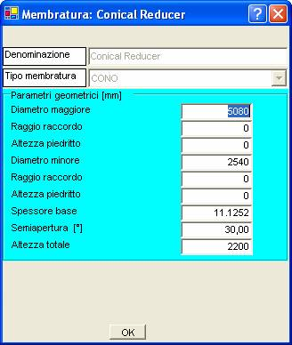
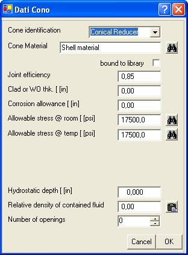
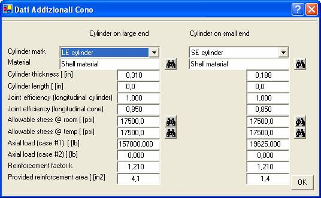

La prima finestra di dati è la seguente:

Tra la semiapertura e l’altezza totale è sufficiente fornire uno solo dei due dati.
Appare quindi la finestra:

Ed infine la finestra:

Per essere compilata correttamente è necessario inserire prima le membrature cilindro collegate al cono.
Carico assiale totale (non è incluso l’effetto di fondo della pressione) , positivo se di trazione
E’ definito in 1-5 (c) come il rapporto tra i fattori y del mantello e del rinforzo.
Il fattore y è dato dal prodotto dell’ammissibile per il modulo di Young.
Si tratta di un numero maggiore od uguale ad 1. In particolare vale 1 se non è previsto un anello di rinforzo.
Non è necessario fornire questo valore se non noto.
Esso verrà calcolato e proposto durante il calcolo.